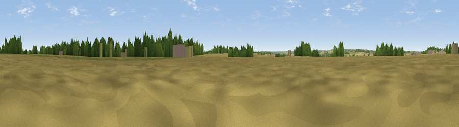

Draughton Field
#41153 in England · top 80% of its area beats it · near DraughtonThe view, rendered

A 360° render of this exact spot computed from the terrain model, tree cover and land cover — summer colours, afternoon light, calibrated against photographs of famous viewpoints. Real trees, hedges and buildings will differ in detail.
The panorama
Grey silhouette: terrain skyline in each direction (720 bearings, Earth curvature and refraction included). Dashed green: skyline with trees (+15 m) and buildings (+8 m) as obstacles. Blue strip: how far the ground is visible on each bearing.
Where the view opens
Wedge length = distance to the farthest visible ground on that bearing (vegetation-aware). Rings at 10, 25 and 50 km.
What fills the view
71% cropland · 19% grassland · 7% woodland · 3% built-up
Angular shares of the visible panorama (visual magnitude), not map area. Landscape diversity 0.36 (0–1 Shannon).
Key numbers
More beautiful places nearby
The staircase of upgrades: each row has a higher view potential than everything closer. Driving times are estimates from straight-line distance, calibrated against real road routing — check an actual route before setting out.
| Place | Direction | Drive | Score |
|---|---|---|---|
| Viewpoint near Scaldwell | SW · 5 km | ~11 min | 30.8 |
| Viewpoint near Haselbech | WSW · 5 km | ~11 min | 40.8 |
| Viewpoint near Haselbech | W · 7 km | ~14 min | 47.1 |
| Viewpoint near Sibbertoft | NW · 10 km | ~19 min | 48.8 |
| Viewpoint near Cold Ashby | W · 14 km | ~25 min | 61.7 |
| Viewpoint near Staverton | SW · 27 km | ~44 min | 63.3 |
| Big Hill - Staverton Clump | SW · 28 km | ~44 min | 68.4 |
| Old John | NW · 42 km | ~62 min | 70.3 |
52.38862, -0.86376 · source: osm peak · position refined by local search. Computed location — check access rights before visiting.